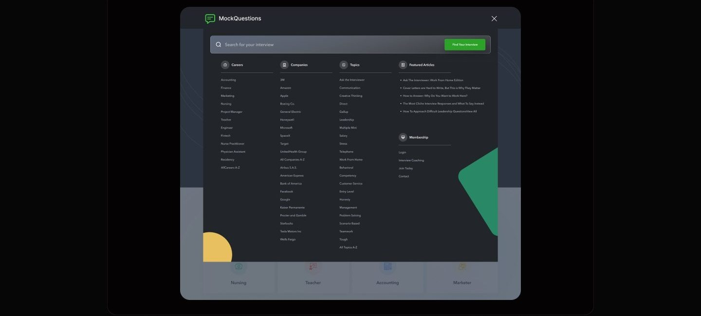
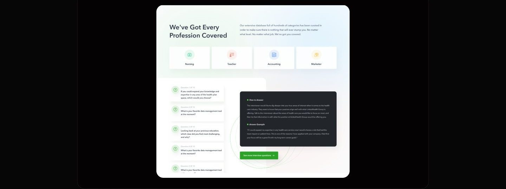
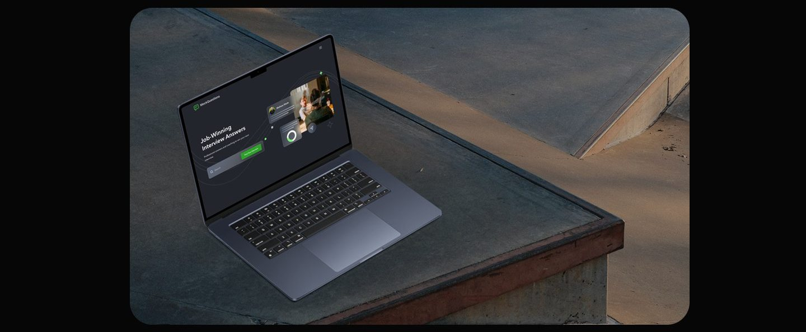

Case study 04 of 11 · Learning platform · Independent concept project
MockQuestions
Interview prep is scattered and anxious. MockQuestions turns it into structured practice by role and company.
5 min read

MockQuestions is a real interview preparation platform, and this is an unsolicited concept study with no affiliation to Mock Questions LLC. The brand and the product premise belong to their owners; the competitive research, flows, screens, and system work on this page are my own exploration and were never commissioned, endorsed, or shipped.
Long Q&A pages have to serve two opposing modes at once, deep reading and fast jumping between question categories, on desktop and a 375px phone.
How the reading surface stays calm while the collapsing table of contents, filters, and role-based question banks do the structural work.
Prep lives in ten tabs, and none of them match the job
Job seekers do not lack interview advice, they lack advice organized around the exact role and company in front of them. Existing platforms either index jobs or coach interviews, rarely both, so a candidate researching a Marketing role at Amazon assembles their own prep from scattered, unstructured sources. The premise of pairing question banks with expert answers already belongs to MockQuestions; this redesign asks how that existing premise could work harder, folding career search, company filters, and expert guidance into one coherent surface.
- Question databases are generic; almost nothing is tailored to the specific role a candidate is actually chasing.
- Job search and interview prep live in separate tools, forcing candidates to bounce between tabs mid-preparation.
- Without a structured path through the material, candidates walk into interviews unsure they prepared the right things.
A competitive pass across Glassdoor, Indeed, Prepfully, CareerCup, and Levels.fyi mapped which platforms pair job search with role-specific prep, and where each one falls short.
The calls that shaped it
A table of contents that collapses out of the reading path
The side navigation earns its space only when the reader asks for it; the rest of the time the page belongs to the answer. The Q&A page stacks a lot of material: an open question with expert and example answers, an accordion of further questions, related careers, and company interviews. A permanently docked sidebar would tax reading width on every visit to serve a wayfinding need that is intermittent. So the navigation ships as a slim collapsed rail and expands on demand into a table of contents, with entries like Typical, Online, and Growth Marketing questions that jump straight to a section without long scrolling. I considered a sticky bar of anchor chips across the top instead, but question categories are too numerous and too long to survive horizontal compression. Collapsed by default, the feature costs nothing until the moment it pays for itself.

Question banks filed by role, company, and topic, never one big list
The unit of preparation is a specific interview, so every entry point is a role, a company, or a topic rather than a generic question dump. The clearest competitive gap was generality: existing databases answer everyone and therefore no one. Here the search overlay organizes the entire catalog into Careers, Companies, and Topics as scannable alphabetical columns, with featured articles alongside. Choosing a career leads to subtopic cards like Accomplishment and Adaptability, each with its own Start Interview action, while the company view lists open roles under employers like Amazon and Google so candidates can prep for a named target. I weighed leaning on free-text search alone, but many users do not yet know the name of the role they need; browsable categories carry the unsure while the search bar serves the decided. The taxonomy is the product; the screens mostly stay out of its way.

Mobile compresses structure, not content
On a phone the full question bank survives intact; what changes is how much of it is open at once. At 375px everything collapses to a single 340px column, but nothing is cut. The Q&A page becomes a stack of numbered accordions where each question expands in place into How to Answer guidance and an example answer, so a candidate reads one question deeply without losing the list. The search overlay goes full screen and keeps the same category order, Careers first, then Companies, as a vertically scrolled list. I considered shipping mobile as a lighter subset of the desktop catalog, and rejected it: interview prep happens on phones in transit, often right before the interview, which is exactly when the complete bank matters most. The compression choices are about pacing disclosure, not trimming scope.
One loud green, many quiet surfaces
Highlighter green is reserved for the single action that moves prep forward, while dark heroes and airy white content sections keep long reading calm.


Five tasks I planned to watch
Walking representative job seekers through these tasks would show whether roles, companies, and question categories are findable and whether the expert guidance reads as clear and actionable; it would not show whether structured practice changes how a real interview goes.
This chapter is the plan for testing a concept, not an account of sessions with real job seekers; nothing in this study is validated by live usage.
What I learned
Reading and wayfinding want different pages, and the honest answer is to let one page be both at different moments. The collapsing table of contents taught me to price navigation by how often it is actually needed, not by how important it feels; docking it permanently would have charged every reader for a feature used in bursts.
When content is the product, taxonomy is the design work. Most of this project's value lives in the decision to file everything under roles, companies, and topics, and the screens succeed by exposing that structure plainly instead of decorating it. The same discipline showed up in search: categories for people who do not know what to type, a search bar for people who do.
Mobile parity is a scope decision made early, not a layout problem solved late. Committing to the full question bank at 375px forced the accordion and full-screen search patterns, and those constraints improved the desktop components too, since every card and dropdown had to survive a single narrow column.
Appendix: foundations and system
The artifacts behind the screens: the two core flows the product was built around, and the component grammar that kept dark and light surfaces consistent.